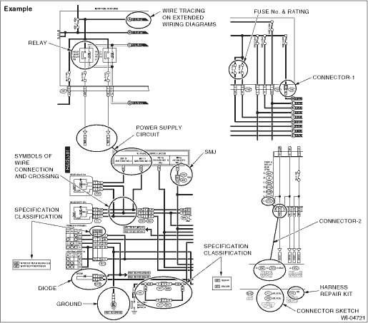
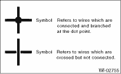

A number of symbols are used in each wiring diagram to easily identify parts or circuits.

A symbol used to indicate a relay.
The sketch of the connector indicates the one-pole types.
Some wiring diagrams are indicated in foldouts for convenience. Wiring destinations are indicated where necessary by corresponding symbols. (When two pages are needed for clear indication)
The “FUSE No. & RATING” corresponds with that used in the fuse box (main fuse box, fuse and joint box).
• Each connector is indicated by a symbol.
• Each terminal number is indicated in the corresponding wiring diagram in an abbreviated form.
• For example, terminal number “G4” refers to No. 4 terminal of connector (G: F41) shown in the connector sketch.
• Each connector sketch clearly identifies the shape and color of a connector as well as terminal locations. Non-colored connectors are indicated in white or natural color.
• When more than two types of connector number are indicated in a connector sketch, it means that the same type connectors are used.
Each grounding point can be located easily by referring to the corresponding wiring harness.
A symbol is used to indicate a diode.
9. WIRE TRACING ON EXTENDED WIRING DIAGRAMS
For a wiring diagram extending over at least two pages, a symbol (consisting of the same characters with arrows), facilitates wire tracing from one page to the next.
A ←→ A, B ←→ B
10. SYMBOLS OF WIRE CONNECTION AND CROSSING

A symbol is used to indicate the power supply in each wiring diagram.
“MB — 5”, “MB — 6”, etc., which are used as power- supply symbols throughout the text, correspond with those shown in the “POWER SUPPLY CIRCUIT” in the wiring diagram.
Accordingly, using the “POWER SUPPLY CIRCUIT” and wiring diagrams permits service personnel to understand the entire electrical arrangement of a system.
12. CLASSIFICATION BY SPECIFICATION
When the wiring diagram differ according to vehicle specifications, the specification difference is described by using abbreviations.
The difference among destinations is indicated using option code. (EK, EC, etc.)
The option code is described on the model number plate in the engine compartment. 
The connector adapting to Harness repair kit is shown as “HR” in the right-upper of connector number. Refer to “Harness Repair Kit” for harness repair kit.